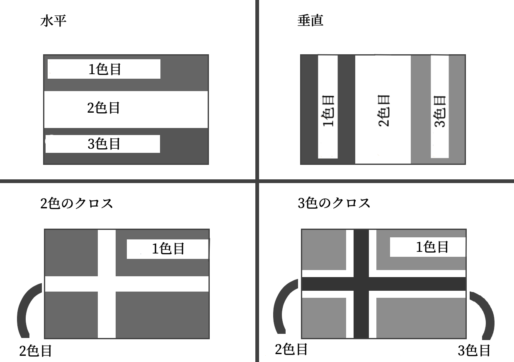

モジュール詳細：旗章学
作った旗が存在しないなら、新しい国の名前を考えよう。爆弾を解除するにあたって、かなり時間の無駄になるだろう。
このモジュールは、8つの色ボタン、旗、ポールの先端にある送信ボタンで構成されている。
送信ボタンは3色のシークエンスを循環している(シークエンスごとに長い空白がある)。グレーはカウントされない。
以下の手順を使用し、指示に従って旗を色付けする。
旗の色は重複しない。手順実行後に重複する色がある場合は、「色の変更」のセクションに従って重複しないように色を変更する必要がある。
色は赤(R)、オレンジ(O)、黄(Y)、緑(G)、青(B)、アクア(A)、白(W)、黒(K)である。
色付けした旗が下の「国旗一覧」の表にある場合は、カウントダウンタイマーの任意の数字に送信の欄の数字が含まれているときに送信ボタンを押す。それ以外の場合は、カウントダウンタイマーの任意の位置にシリアルナンバーの最後の数字があるときに送信ボタンを押す。
間違って色付けされた旗を送信したり間違ったタイミングで送信すると、ミスが記録される。
